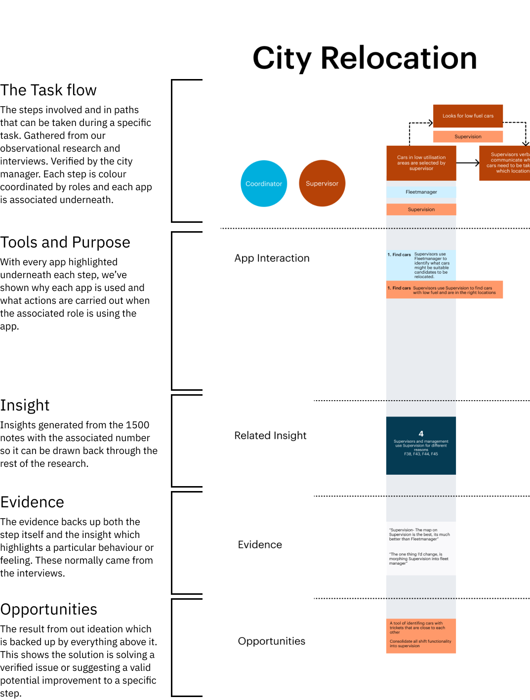

UX Design at Mevo
Summary
I teamed up with three Masters of User Experience Design (MUXD) classmates to work with the Wellington car-sharing startup Mevo and improve their internal processes. We touched on many factions of UX from service design, to UI design, and had to fully immerse ourselves into everything Mevo. We delivered several process maps that justified several opportunities to improve steps in their current task flows.
Mevo
Founded in 2016 Mevo aims to tackle the wild rates of private car ownership that we have in New Zealand. They work based off a similar model to Lime or other electric scooters with one major difference - instead of scooters, they deal with cars.
Brief
With Mevo being well and truly in in it’s startup phase, the company is growing rapidly and their processes with them. In order to manage all the cars, they have a team of employees dedicated to shift the cars around, fuel them up and keep them in tip top shape. This team is known as the “Mobility team” (or Mob for short). With so much to do, there isn’t a lot of time to teach proper process, so a lot of it is learned on the job there meaning plenty of opportunity to expand and make sure the processes that are taught are scalable and replicable.
Problem
This problem seemed fairly straight forward initially and we even came up with a guiding how might we question within the reverse brief:
How might we improve the Mobility Team’s internal processes to make them more efficient, replicable and scalable for Mevo as it continues to grow?
With this in mind we got to it and asked for any documentation they had on their current processes. Which turned out to be, well, not a lot. Introduce problem #2, there was no existing documentation of what processes Mevo currently do. Everything that the Mob team do was taught through word of mouth and on the job, which had served them just fine so far.

Context
The Mob team was our focus and their focus is primarily within “Mob shifts”. These shifts focus on relocation cars from low use areas, places where the chances they would be used is low to high use areas, where they are more likely to be used. They may also investigate some small issues, move cars from the airport or fulfill Valet requests (a service Mevo provides where they move a pre-booked car to a location specified by a customer and reserve it for them for a flat fee). In the past, they would often groom the cars too during these shifts.
Research
We joined the Mob team on several shifts, during the mornings, evenings on the weekends and weekdays. We even started to take part and move the cars around ourselves. Throughout all of this, we began to take note of the task flows, apps and time spent doing specific actions.The next phase after we had developed a good understanding on what the shifts entailed was to interview various members across the company who were involved with the Mob team.
Analysis
We generated over 1500 notes from nearly 9 hours of interviews and the observations and spent days synthesising it all down to 49 findings, then eventually 11 insights before we narrowed those down to 3 “discoveries” which we wanted to present back to the company for feedback on where to head when we began exploring the solution space.
Solutions
We began ideating together as a team, if we had the capacity and time we would have loved to ideate with some of the members of Mevo too. However we still ended up with an array of ideas, which we narrowed down using methods like a value-complexity matrix and relevance to the highlighted discoveries. Some of these ideas included:
We decided early on that one part of the deliverables that we wanted to hand over at the end would be detailed task flows. To highlight what the current process was and then incorporate our research into it in some form. I worked on incorporating all the research we had collected up until this point into the task flow.

Using the task flow as a base, the viewer could see what tools where used in each step, what insight was relevant to it, any evidence in the form of quotes to back it up and lastly relevant solutions which could help improve that specific step.We created 3 of these expansive flows for different tasks that the Mob team would often carry out and presented back all the work we carried out during the last week of our programme.
Reflection
This was easily the most hands-on, involved project I have been a part of since the start of my academic career. Being able to immerse myself so fully into the research and problem was both satisfying and overwhelming. Having such a cooperative client definitely helped enable the team to perform.
Teamwork
I love working in a team. During this project I tried to emphasise the importance of having a strong foundation as a team in order have open and honest channels of communication and help each other perform to the best of our ability. I would help facilitate weekly retrospectives, sprint-like planning sessions and other processes that would help us function optimally and healthily so we could get the work done. Having a good personal relationship with each team member helped me gauge how everyone was doing and helped avoid burn out. They were a fantastic team to work with and I look forward to hopefully crossing paths with each one of them in the future.